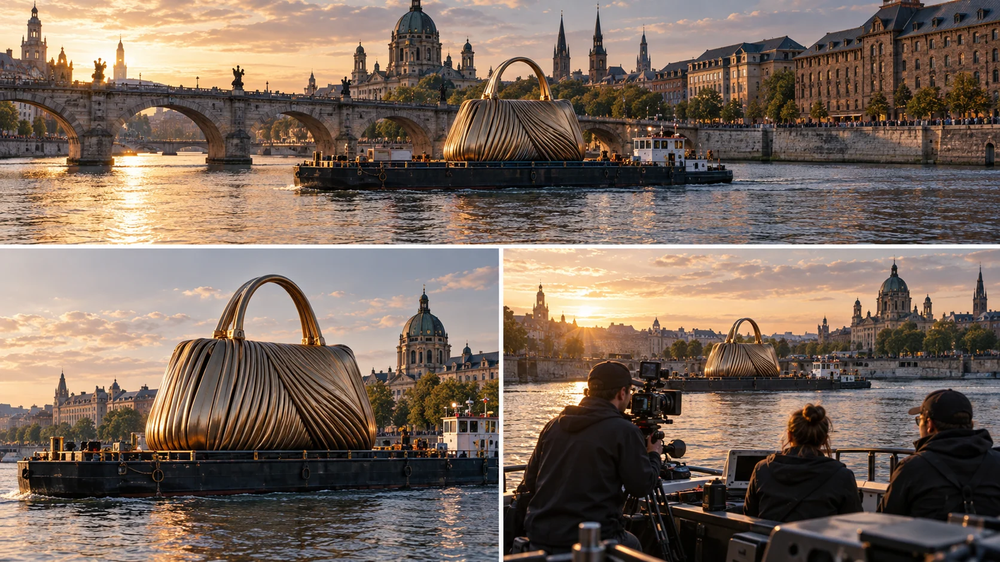

P19 · 고급 · 제작·활용
Burberry Olympia: 도시와 거대 제품의 관계
제품을 크게 보여주면서도 규모와 위치를 알려줄 배경 단서를 선택한다.
그림에서 확인할 세 가지제품과 도시가 함께 읽히는 관계를 설계한다.
1도시와 조형물
가상 강 그림에서 다리와 조형물의 상대 크기를 본다. 도시 기준물이 사라지면 거대한 물체라는 인상이 얼마나 남는지 비교한다.
2제품의 형태
더 가까운 그림에서 조형물의 윤곽이 배경과 분리되는지 살핀다. 실제 브랜드 제품을 재현한 것이 아니라 관계 비교용 무상표 물체다.
3서로 다른 배의 역할
큰 조형물을 실은 배와 아래 오른쪽 카메라를 든 사람이 탄 배를 구분한다. 대상의 위치와 촬영자의 시야가 서로 어떤 관계인지 비교한다.
촬영 설계
촬영을 이렇게 설계한다
크기 기준물 선택
교육 제안: 조형물 옆에 어떤 도시 요소가 보여야 크기와 장소를 이해할지 정한다. 배경이 유명하다는 이유만으로 넣기보다 제품과 관계가 읽히는 위치를 선택한다.
전체와 제품 컷 구분
교육 제안: 도시와 조형물이 함께 보이는 컷과 제품 형태가 명확한 컷을 한 쌍으로 만든다. 한 프레임에서 둘 다 충족하기 어렵다면 억지로 넓히지 않고 별도 컷으로 나눈다.
전달 조건 확인
교육 제안: 촬영 종료 전 사진·영상의 사용처와 파일 확인 담당을 정한다. 원문의 DIT 인계처럼 멋진 컷이 있어도 전달·검수 과정이 빠지면 납품이 완성되지 않는다는 점을 포함한다.
Burberry 가방 조형물을 실은 바지선이 템스강과 Tower Bridge를 지나는 촬영이다.
원본 영상Burberry Olympia: 도시와 거대 제품의 관계
1. 규모를 읽는 단서
원본에서 조형물과 비교할 수 있는 다리·건물·배를 찾는다. 크기를 아는 기준물이 있을 때 거대함이 더 명확해지는지 비교한다.
2. 배경과의 겹침
제품의 윤곽이 도시의 수직선이나 다리와 겹치는 부분을 본다. 장소를 보여주면서도 제품 형태가 분리되는 구도를 찾아본다.
3. 원작의 활용 컷
원본에서 도시를 넓게 담은 컷과 제품 중심 컷을 나누어 본다. 광고의 반응이나 매출을 영상 구도만으로 설명하지 않는다.
재생이 제한되면 원본 영상 새 창을 이용하세요.
제작진 설명 · 한국어 요약 번역
항만 당국과 조율해 움직이는 광고 대상을 따라가다
촬영 대상
원문 요약 번역: Solent Sky Services는 템스강을 내려가는 바지선 위 가방 조형물을 촬영했다고 소개한다.
사진과 영상으로 기록했으며 Burberry와는 세 번째 협업이었다.
비행 계획
비행 계획은 Sara가 작성했고 런던 항만청과 안전 및 운영을 조율했다.
템스강 해상 전문업체 Livett's와도 상의했다.
추적선
촬영팀은 Livett's의 개조 경찰 순찰선을 타고 바지선을 따라갔다.
제작진 설명 · 한국어 요약 번역
움직이는 배 위에서 날리고 자료를 인계하다
이착륙
원문 요약 번역: 드론은 순찰선 뱃머리에서 손으로 띄우고 손으로 받았다고 한다.
움직이는 선박에서 운용해야 하는 제약이 있었다고 설명한다.
기록과 인계
영상은 방송용으로 쓸 수 있는 Apple ProRes로 촬영했다고 한다.
하루 촬영이 끝나면 DIT가 영상 파일을 인수했다.
장비 표기
장비 기종은 본문 안에서 표기가 서로 달라 확정하지 않는다.
Kling 프롬프트단문 인과 체인 · 16:9
내가 직접 만들어 본다
기준물인 다리가 있을 때 크기가 읽히고, 가까이 갈수록 기준물을 잃는 대신 제품 윤곽이 또렷해진다는 관계를 지시한다.
- S01강 위의 배가 거대한 조형물을 싣고 간다.
- S02영상은 하나의 연속 쇼트다.
- S03화면에 드론 기체는 나오지 않는다.
- S04처음 10초 동안 카메라는 다리와 조형물을 함께 담는다.
- S05다리가 옆에 있기 때문에 조형물의 크기가 읽힌다.
- S06다음 10초 동안 카메라는 조형물 쪽으로 다가간다.
- S07다가갈수록 다리는 화면 가장자리로 밀린다.
- S08기준물이 줄어들자 크기 인상이 약해진다.
- S09대신 조형물의 윤곽이 배경에서 또렷이 갈라진다.
- S10마지막 10초 동안 카메라를 든 사람이 탄 다른 배가 보인다.
- S11그 배는 조형물을 향해 같은 방향으로 나아간다.
- S12촬영자의 시야는 조형물 쪽을 향한다.
- S13그 결과 전체 컷과 제품 컷이 한 쌍으로 읽힌다.
[네거티브]
- 조형물이 작은 소품처럼 보이는 것 금지
- 전체 컷과 제품 컷이 따로 잘려 붙는 것 금지
- 화면에 드론 기체가 나타나는 것 금지
- 다리가 빠지고 조형물만 화면에 나오는 것 금지
- 다리와 조형물의 크기 비교가 모호해지는 것 금지
- 다가가는 대신 옆으로만 돌아 크기가 그대로인 것 금지
- 다리가 오히려 화면 중앙으로 들어오는 것 금지
- 기준물이 줄었는데도 거대함이 그대로 느껴지는 것 금지
- 윤곽이 배경과 섞여 형태가 흐려지는 것 금지
- 다른 배가 없고 촬영자가 비어 있는 것 금지
- 그 배가 조형물과 반대 방향으로 멀어지는 것 금지
- 촬영자가 엉뚱한 쪽을 향해 시야가 어긋나는 것 금지
- 두 구도가 서로 무관한 장면으로 끝나는 것 금지
결과에서 볼 것
- 다리 덕분에 조형물의 크기가 먼저 읽혔는가
- 다가가며 크기 인상이 약해지고 윤곽이 또렷해졌는가
- 촬영자의 배와 조형물의 위치 관계가 구분되었는가